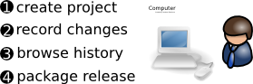

Going solo¶
A personal productivity tool¶
Some tools are designed to make individuals productive (e.g. editors) while other tools (e.g. back-end services) are focused on making teams or whole companies more productive. Version control tools have traditionally been in the latter camp.
One of the cool things about Breezy is that it is so easy to setup that version control can now be treated as a personal productivity tool. If you wish to record changes to files for the purposes of checkpointing good known states or tracking history, it is now easy to do so. This chapter explains how.
The solo workflow¶
If you are creating your own masterpiece, whether that be a software project or a set of related documents, the typical workflow looks like this:
Even if you will always be working as part of a team, the tasks covered in this chapter will be the basis of what you’ll be doing so it’s a good place to start.